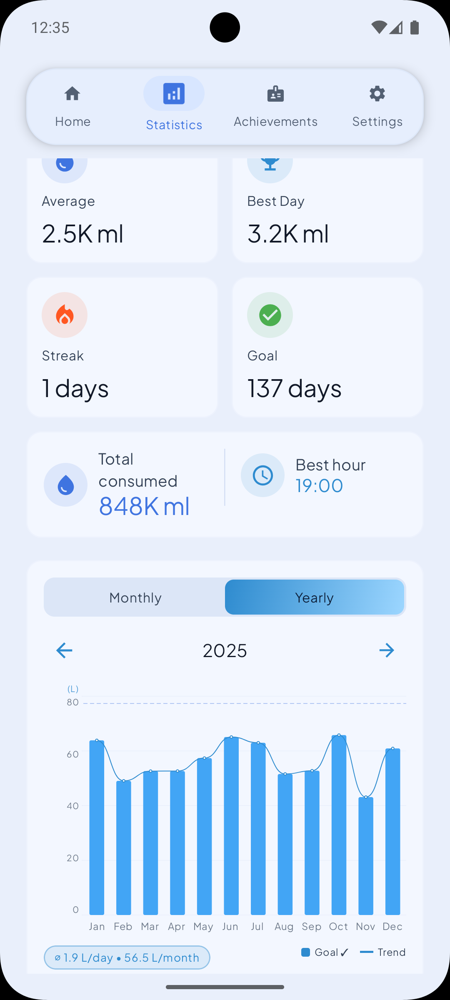
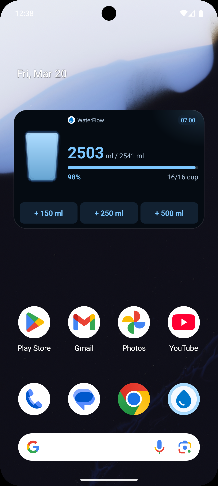
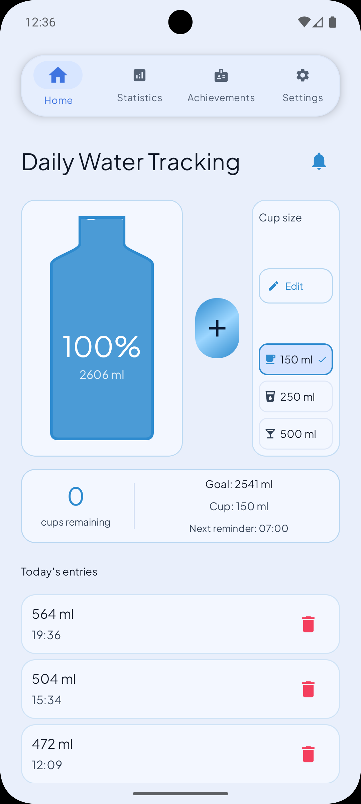
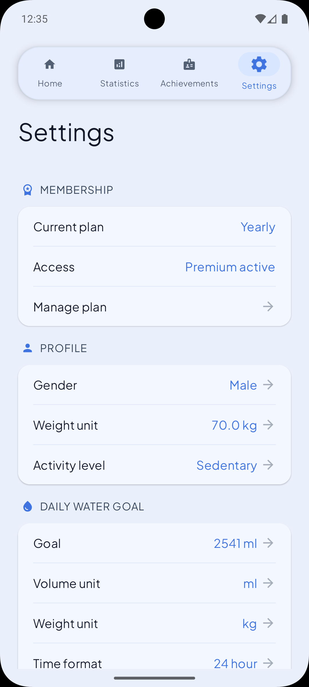
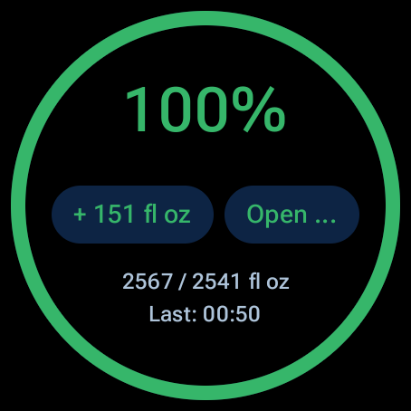

Set a Goal That Fits You
WaterFlow calculates a recommended daily goal from your profile and lets you adjust it anytime.
WaterFlow is an Android hydration app built for fast logging, personalized goals, and reminders that respect your routine. It supports custom cup sizes, home screen widgets, Wear OS features, and privacy-first data handling without requiring an account.

WaterFlow calculates a recommended daily goal from your profile and lets you adjust it anytime.
Use custom cup sizes, one-tap add actions, and a focused home screen to keep the habit friction-free.
Reminder timing, sleep schedule, silent hours, and stop-on-goal controls help notifications feel useful instead of noisy.
The home screen widget keeps hydration visible and actionable throughout the day with quick-add buttons and live progress.

Average intake, best day, streaks, goal hits, and chart views help users understand consistency over time.

Achievements turn daily hydration into a streak-driven system with visible progress across consistency and volume milestones.

Wear OS support brings progress, reminders, and quick hydration actions to a glanceable watch interface.

The product experience centers on fast actions, clear progress, and reminder controls that stay out of your way.
WaterFlow keeps the core hydration loop accessible from the surfaces people actually use throughout the day.
The app emphasizes device-based history and trusted transfer flows instead of forcing users into an account system.
WaterFlow is available on Google Play for Android devices and the App Store for iOS.
Support: waterflowhelp@proton.me